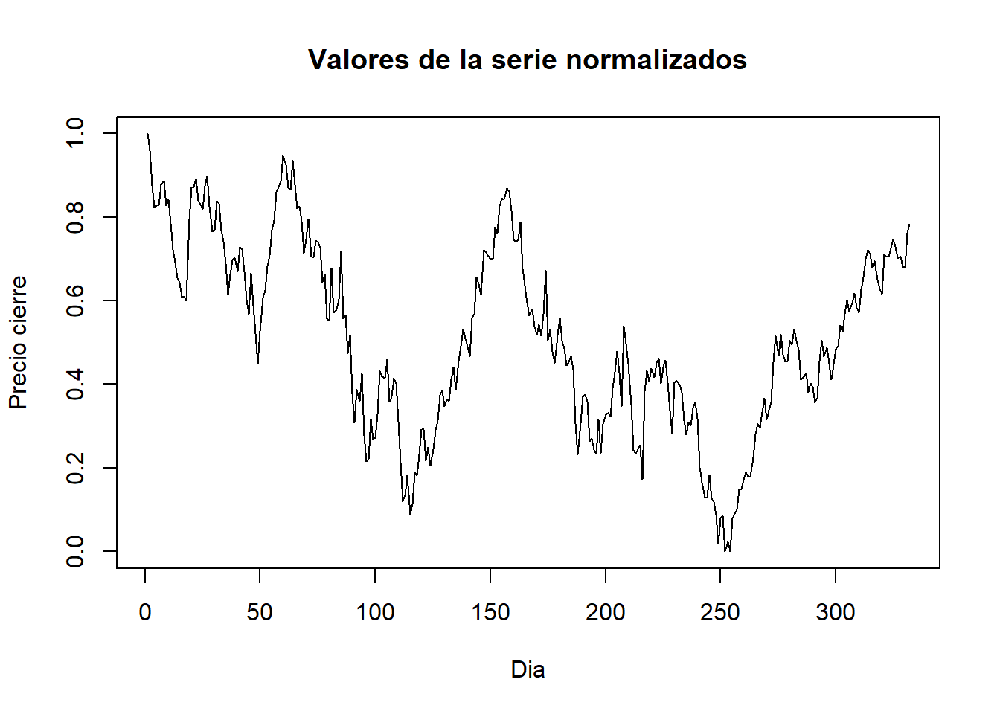
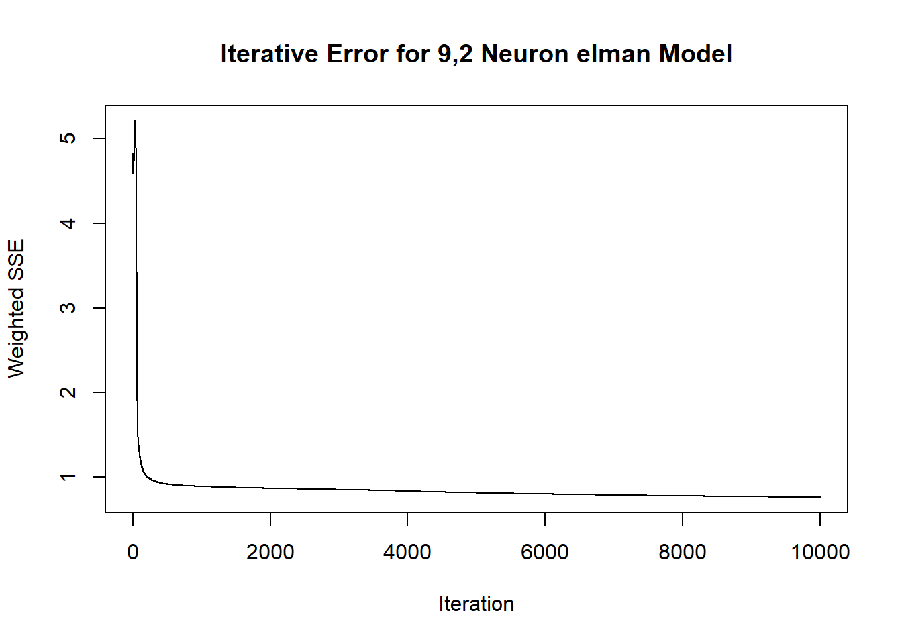
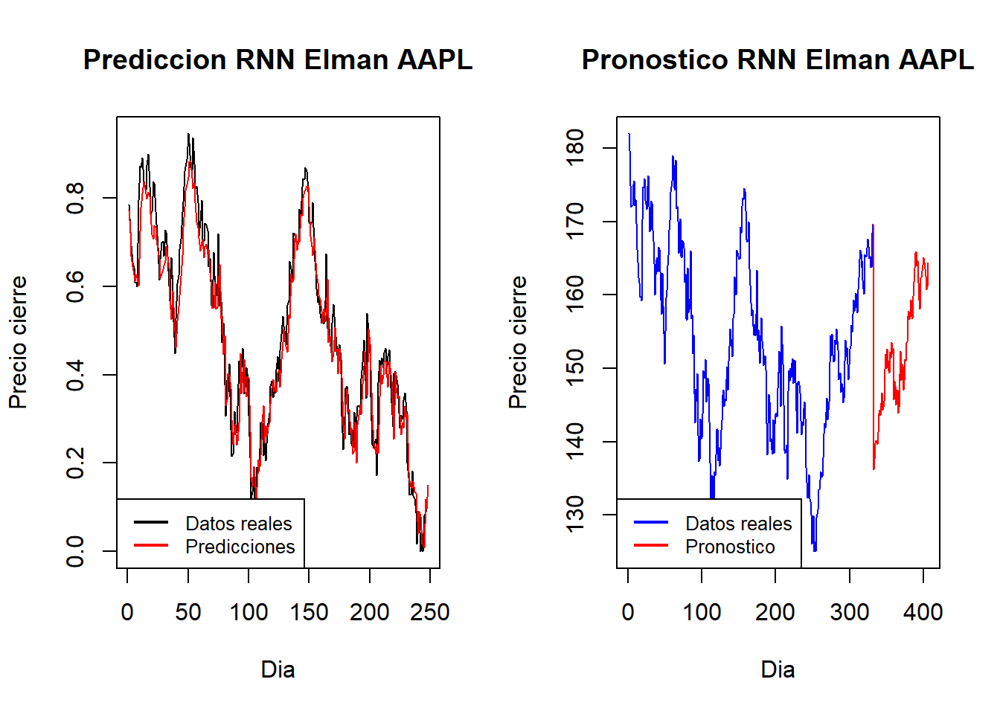

8 Modelos de Redes Neuronales Recurrentes en series de tiempo
8.1 Modelo de Elman
Las redes de Elman son el modelo más simple de Red Neuronal Recurrente (en adelante, RNN).Tienen la misma estructura que las redes neuronales alimentadas hacia adelante, salvo por una única circunstancia: se permite que cada neurona se retroalimente a sí misma.
A continuacion se realiza solo para APPLE:

Continuamos con la construccion de base de entrenamiento y base de test
set.seed(1)
tamano_total <- length(stock_rnn_norm)
tamano_train <- round(tamano_total*9/12, digits = 0)
train <- 0:(tamano_train-1)
test<-(tamano_train):tamano_total
y<-as.zoo(stock_rnn_norm)
x1<-Lag(y,k=1)
x2<-Lag(y,k=2)
x3<-Lag(y,k=3)
x4<-Lag(y,k=4)
x5<-Lag(y,k=5)
x6<-Lag(y,k=6)
x7<-Lag(y,k=7)
x8<-Lag(y,k=8)
x9<-Lag(y,k=9)
x10<-Lag(y,k=10)
slogN<-cbind(y,x1,x2,x3,x4,x5,x6,x7,x8,x9,x10)
slogN<-slogN[-(1:10),]
inputs<-slogN[,2:11]
outputs<-slogN[,1]
fit<-elman(inputs[train],
outputs[train],
size=c(9,2),
learnFuncParams=c(0.1),
maxit=10000)
plotIterativeError(fit,main = "Iterative Error for 9,2 Neuron elman Model")
### Se desnormalizan los datos
predictions<-predict(fit,inputs[-train])
valuesPred <- predictions*(max(stock_rnn)-min(stock_rnn)) + min(stock_rnn)
valuesPred[0:10]## [1] 136.2321 137.6087 139.7882 140.1295 140.0936 139.6354 141.2500 143.7929
## [9] 144.3251 143.6510Graficamos el comportamiento de los datos reales vs su prediccion y el pronostico
par(mfcol = c(1, 2))
### Grafico train-test
y <- as.vector(outputs[-test])
pred <- predict(fit, inputs[-test])
plot(y, type = "l", main = "Prediccion RNN Elman AAPL", xlab = "Dia", ylab = "Precio cierre", col = "black")
lines(pred, col = "red")
legend("bottomleft", legend = c("Datos reales", "Predicciones"), col = c("black", "red"), lty = c(1, 1), lwd = 2, cex = 0.8, box.lwd = 2)
### Grafico Pronostico
x <- 1:(tamano_total + length(valuesPred))
y <- c(stock$close, valuesPred)
plot(x, y, main = "Pronostico RNN Elman AAPL", xlab = "Dia", ylab = "Precio cierre", col = "blue", type = "l")
lines(x[1:tamano_total], y[1:tamano_total], col = "blue")
lines(x[(tamano_total):length(x)], y[(tamano_total):length(x)], col = "red")
legend("bottomleft", legend = c("Datos reales", "Pronostico"), col = c("blue", "red"), lty = c(1, 1), lwd = 2, cex = 0.8, box.lwd = 2)